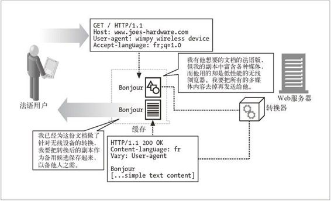

17.5 转码
我们已经讨论了一个机制，该机制可以让客户端和服务器从某个 URL 的一系列文档中挑选出最适合客户端的文档。实现这些机制的前提是，存在一些满足客户端需求的文档——不管是完全满足还是在一定程度上满足。
然而，如果服务器没有能满足客户端需求的文档会怎么样呢？服务器可以给出一个错误响应。但理论上，服务器可以把现存的文档转换成某种客户端可用的文档。这种选项称为转码。
表 17-4 列出了一些假设的转码。
表17-4 假设的转码
| 转换之前 | 转换之后 |
|---|---|
| HTML 文档 | WML 文档 |
| 高分辨率图像 | 低分辨率图像 |
| 彩色图像 | 黑白图像 |
| 有多个框架的复杂页面 | 没有很多框架或图像的简单文本页面 |
| 有 Java 小应用程序的 HTML 页面 | 没有 Java 小应用程序的 HTML 页面 |
| 有广告的页面 | 去除广告的页面 |
有 3 种类别的转码：格式转换、信息综合以及内容注入。
17.5.1 格式转换
格式转换是指将数据从一种格式转换成另一种格式，使之可以被客户端查看。通过 HTML 到 WML 的转换，无线设备就可以访问通常供桌面客户端查看的文档了。通过慢速连接访问 Web 页面的客户端并不需要接收高分辨率图像，如果通过格式转换降低图像分辨率和颜色来减小图像文件大小的话，这类客户端就能更容易地查看图像比较丰富的页面了。
格式转换可以由表 17-2 中列出的内容协商首部集来驱动，但也能由 User-Agent 首部来驱动。注意，内容转换或转码与内容编码或传输编码是不同的，后两者一般用于更高效或安全地传输内容，而前两者则可使访问设备能够查看内容。
17.5.2 信息综合
从文档中提取关键的信息片段称为信息综合（information synthesis），这是一种有用的转码操作。这种操作的例子包括根据小节标题生成文档的大纲，或者从页面中删除广告和商标。
根据内容中的关键字对页面分类是更精细的技术，有助于总结文档的精髓。这种技术常用于 Web 页面分类系统中，比如门户网站的 Web 页面目录。
17.5.3 内容注入
前面描述的两类转码通常会减少 Web 文档的内容，但还有另一类转换会增加文档的内容，即内容注入转码。内容注入转码的例子有自动广告生成器和用户追踪系统。
设想一下，一个能往途经的每个 HTML 页面中自动添加广告的广告植入转码器是多么的诱人（当然也很烦人）。这类转码操作只能动态进行——它必须即时添加与当前的特定用户有关，或针对特定用户的广告。也可以构建用户追踪系统，在页面中动态增加内容，用于收集用户查看页面和客户端浏览方式的统计信息。
17.5.4 转码与静态预生成的对比
转码的替代做法是在 Web 服务器上建立 Web 页面的不同副本，例如一个是 HTML，一个是 WML；一个图像分辨率高，一个图像分辨率低；一个有多媒体内容，一个没有。但是，这种方法不是很切合实际，原因很多：某个页面中的任何小改动都会牵扯很多页面，需要很多空间来存储各页面的不同版本，而且使页面编目和 Web 服务器编程（以提供正确的版本）变得更加困难。有些转码操作，比如广告插入（尤其是定向广告插入），就不能静态实现——因为插入什么广告和请求页面的用户有关。
对单一的根页面进行即时转换，是比静态的预生成更容易的解决方案。但这样会在提供内容时增加时延。不过有时候其中一些计算可以由第三方进行，这样就减少了 Web 服务器上的计算负荷——比如可以由代理或缓存中的外部 Agent 完成转换。图 17-3 显示了在代理缓存中进行的转码。

图 17-3 在代理缓存中进行转换或转码